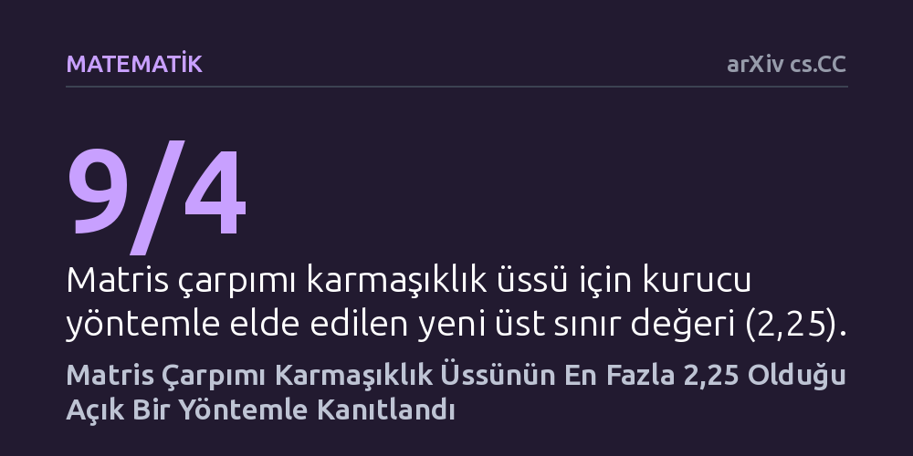

MATEMATIK · arXiv cs.CC · 2026-10-22
Çalışmada iki matrisi çarpmak için gereken temel aritmetik işlem sayısının teorik üst sınırı araştırıldı. Yazar, karmaşık varoluşsal savlar yerine doğrudan uygulanabilir bir blok yöntemi kurarak bu üssün en fazla 2,25 olduğunu gösterdi.
Matris çarpımının hız sınırına ilişkin yeni teorik eşik, soyut varoluş iddialarından çıkarılarak adım adım takip edilebilen somut bir algoritmaya dönüştürüldü.

Bilgisayar biliminin ve modern mühendisliğin en temel yapı taşlarından biri matris çarpımıdır. Ekrandaki üç boyutlu grafiklerin oluşturulmasından büyük dil modellerinin eğitilmesine kadar dijital dünyadaki sayısız işlem, büyük sayı tablolarının birbiriyle çarpılmasına dayanır. Okul sıralarında öğretilen klasik yöntemle n x n boyutunda iki matrisi çarpmak için yaklaşık n küp adet çarpma ve toplama işlemi gerekir. Matris boyutları büyüdükçe bu işlem yükü hızla devasa boyutlara ulaşır ve işlemcileri zorlar.
Araştırmacılar uzun yıllardır şu temel sorunun cevabını arıyor: İki matrisi çarpmak için teorik olarak en az kaç işlem yapmak zorundayız? 1969 yılında Volker Strassen bu işlem üssünün 3'ün altına, yaklaşık 2,81 seviyesine indirilebileceğini göstererek bu alanda önemli bir kapı araladı. O günden bu yana matematikçiler omega adı verilen bu hız üssünü adım adım 2 sınırına yaklaştırmaya çalışıyor. Bu üssün kuramsal olarak düşürülmesi, yalnızca kuramsal bir merak değil, hesaplama biliminin nihai sınırlarını anlama çabasıdır.
Kısa süre önce OpenAI araştırmacıları, Strassen'in asimptotik spektral çerçevesini kullanarak karmaşık sayılar üzerinde matris çarpımı üssünün 9/4'e (yani 2,25'e) eşit veya daha küçük olduğunu öne sürmüştü. Ne var ki bu iddia yapıcı olmayan bir kanıta dayanıyordu. Matematikte yapıcı olmayan kanıtlar, aranan bir sonucun veya algoritmanın teorik olarak var olduğunu ispatlar; fakat bu algoritmanın tam olarak ne olduğunu ya da bilgisayarda adım adım nasıl çalıştırılacağını göstermez.
Rafael Pass bu çalışmada farklı bir yol izleyerek iddiayı somut bir zemine taşıyor. Yazar, spektral varoluş savlarının soyut yapısı yerine, doğrudan Strassen tarzı cebirsel bir matris çarpım özdeşliği kurguluyor. Ardından elde ettiği bu özdeşliği bilgisayar biliminde çok iyi bilinen standart blok özyineleme yöntemiyle genişletiyor. Böylece algoritmanın her adımı matematiksel olarak elle tutulur, doğrudan incelenebilir ve takip edilebilir hale geliyor.
Çalışmanın ana bulgusu, matris çarpımı üssü omeganın en fazla 9/4 (2,25) olduğunu gösteren eksiksiz ve kendi içinde yeterli bir kurucu kanıttır. Yazar, polinom paketleme yaklaşımından türetilen cebirsel yapıyı kullanarak, iki matrisin çarpımını çok daha az sayıda skaler işlemle gerçekleştiren açık bir formül inşa ediyor.
Elde edilen sonuç, sıfırdan büyük her gama değeri için, n x n boyutundaki iki tam sayı matrisinin O(n^(9/4+gama)) adet tam sayı aritmetik işlemiyle çarpılabileceğini ortaya koyuyor. Bu analiz, daha önce sadece varlığı iddia edilen 2,25 sınırının, karmaşık ve dolambaçlı kuramlara ihtiyaç kalmadan sıradan blok özyineleme kurallarıyla doğrudan elde edilebildiğini kanıtlıyor.
Bu çalışma, teorik bilgisayar biliminde matris çarpımının sınırlarına dair önemli bir berraklık sağlıyor. Yapıcı bir ispatın sunulması, karmaşık spektral yapıların ardında gizlenen algoritmanın diğer matematikçiler tarafından rahatça incelenebilmesi ve geliştirilebilmesi anlamına geliyor. Araştırmacılar artık bu açık özdeşliği temel alarak yeni cebirsel teknikler deneyebilir ve üssü 2'ye daha da yaklaştırmanın yollarını arayabilir.
Bununla birlikte, teorik üssün 2,25'e çekilmiş olması mevcut bilgisayarlarımızın matrisleri hemen bu hızda çarpabileceği anlamına gelmez. Blok özyinelemeli algoritmaların pratikte klasik yöntemleri geride bırakabilmesi için matris boyutlarının genellikle astronomik düzeylere ulaşması gerekir. Dolayısıyla bu bulgu, yarınki yazılımları hızlandırmaktan ziyade, algoritmaların matematiksel sınırlarını haritalandıran güçlü bir kuramsal kazanımdır.